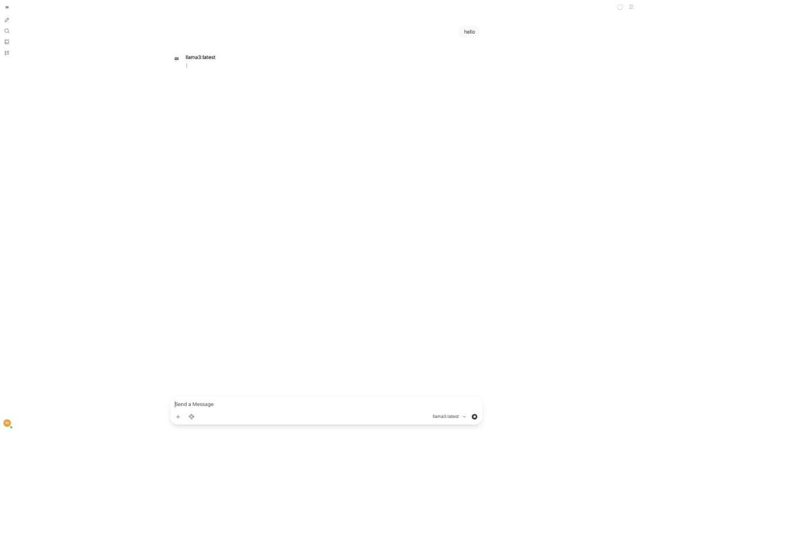

Your own private ChatGPT, running entirely on your Mac — no internet required after setup.
Open WebUI is already running? Access it here:
Don't have it running yet? Jump to setup instructions ↓
Use your local Chrome terminal to run commands:
→ Open Chrome Terminal (http://127.0.0.1:3847/)
All commands below have copy buttons — click to copy and paste into your terminal.
Open WebUI is an open-source, self-hosted web interface for talking to large language models. It works with Ollama or any OpenAI-compatible API, and — because it runs entirely on your own machine — it lets you use a ChatGPT-like chat experience completely offline, with your conversations and data never leaving your computer.
Cloud AI assistants like ChatGPT are convenient, but every message you send travels to a third-party server, which raises real concerns around privacy, cost, and availability. Running the model locally with Ollama and driving it through Open WebUI addresses all three:
Original brief (Turkish): "Open WebUI, Ollama veya OpenAI uyumlu API'lerle çalışan, tamamen kendi bilgisayarınızda barındırıp internetsiz kullanabildiğiniz, açık kaynaklı kendi ChatGPT'niz gibi kullanabileceğiniz bir web uygulaması arayüzüdür."

Open WebUI at http://localhost:8080, backed by Ollama on the same machine, with llama3:latest selected as the active model.
brew install ollama on macOS)brew install uv) — lets you run Open WebUI without Dockerollama serve &
ollama list # see which models you already haveIf you don't have a chat model yet, pull one:
ollama pull llama3.2:1b # ~1.3GB, fast, good for testinguvx open-webui serve --port 8080
The first run downloads Open WebUI's Python dependencies and a small embedding model
(sentence-transformers/all-MiniLM-L6-v2) — this can take a couple of minutes. Subsequent
starts are fast.
open -a "Google Chrome" http://localhost:8080On first visit you'll be asked to create a local admin account (name, email, password) — this account lives only in Open WebUI's local SQLite database on your machine, not on any external server.
llama3:latest.http://localhost:11434) and streams the response back.To confirm the stack actually works end-to-end, the same request Open WebUI sends was issued directly against Ollama's local API on this machine:
curl http://localhost:11434/api/chat -d '{
"model": "llama3:latest",
"messages": [{"role": "user", "content": "hello"}],
"stream": false
}'Response: "Hello! It's nice to meet you. Is there something I can help you with, or would you like to chat?"
| Run | Total duration | Model load | Prompt eval | Response generation |
|---|---|---|---|---|
| Cold start (model not yet in memory) | 4.74s | 4.15s | 0.13s | 0.46s (26 tokens) |
| Warm (model already loaded) | 3.24s | 0.33s | 0.16s | 2.52s (26 tokens) |
Most of the "cold start" time is simply loading the 4.7GB llama3:latest weights into memory the
first time — after that, only the actual prompt processing and token generation matter. Timings will vary with
model size and hardware; these numbers are from an Apple M1 Max with 64GB RAM.
# 1. Start Ollama's background server
ollama serve &
# 2. Confirm which local models are available
ollama list
# 3. Launch Open WebUI (no Docker needed) on port 8080
uvx open-webui serve --port 8080
# 4. Open the app in Chrome
open -a "Google Chrome" http://localhost:8080
# 5. Direct API sanity check + timing (bypasses the UI, talks straight to Ollama)
curl http://localhost:11434/api/chat -d '{
"model": "llama3:latest",
"messages": [{"role": "user", "content": "hello"}],
"stream": false
}'This page is published on GitHub Pages, which only serves static files — it cannot run Ollama or Open WebUI for you. It documents how to stand up the stack on your own machine. Open WebUI itself must run locally (or on a server you control) because it needs a live backend process and access to a local/remote Ollama instance.
This project follows the delivery-pilot-template self-learning framework — click the ⚙️ button (bottom-right) for the full 7-stage project log.